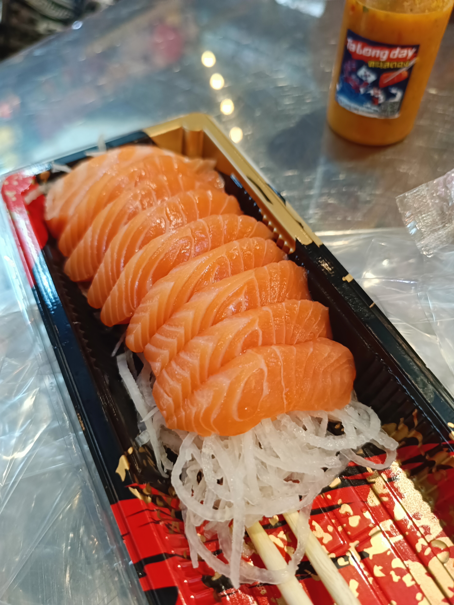

รูปที่ 5 แซลมอน ก็อร่อยเหมือนกันนะเนี่ย
วันที่ 15 มิถุนายน 2024
ผมและครอบครัวเดินทางไปยังนครปฐมเพื่อทำธุระกับครอบครัวในระหว่างทางกลับบ้านก็ได้แวะตลาดสดธนบุรีเพื่อจะรับประทานอาหารกันก่อนเข้าบ้าน
จึงตกลงกันว่าจะรับประทานอาหารทะเลก็แล้วกันจึงเดินหาแล้วซื้อกินในตลาดสดที่นั้นเลย สรุปเมนูที่ซื้อกิน ได้แก่ กุ้งเผา ปลาหมึกย่าง
ปูม้านึ่ง และ แซลมอน ประเด็นที่น่าสนใจคือแซลมอนที่ร้านค้าขายนั้นแล่สดขายทำให้เนื้อปลามีความนุ่มหวานละมุนลิ้นมากๆสำหรับฉซลมอน
ตลาดสดธนบุรี ก่อนออกถนนเส้นบรมราชชนนี ดังนั้นจึงเกิดแคปชั่นว่า
แซลมอน ก็อร่อยเหมือนกันนะเนี่ย